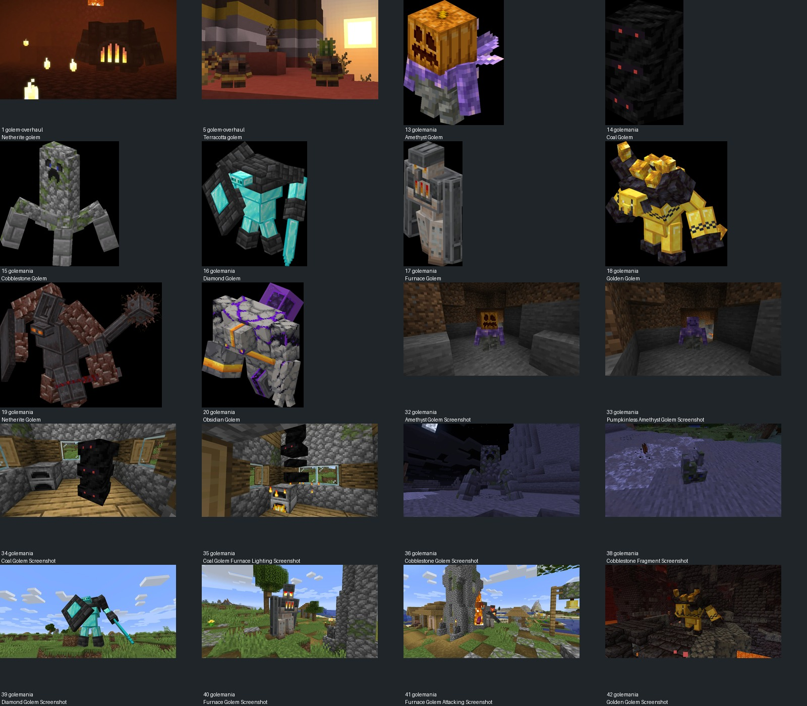
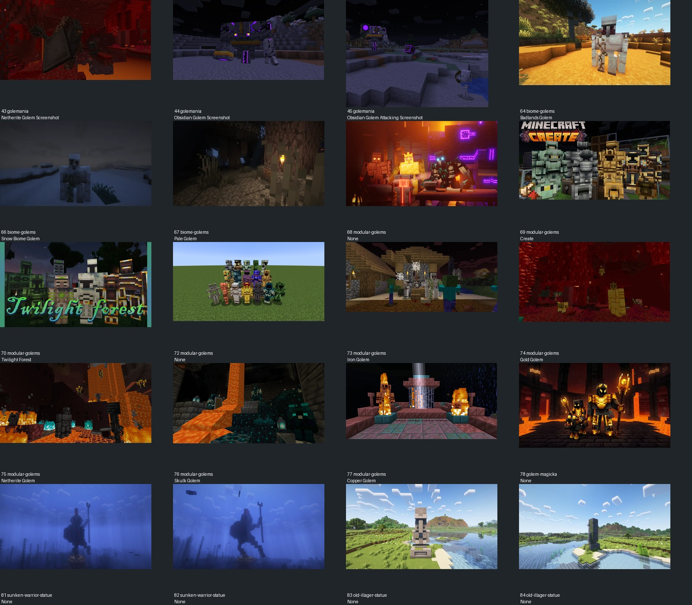
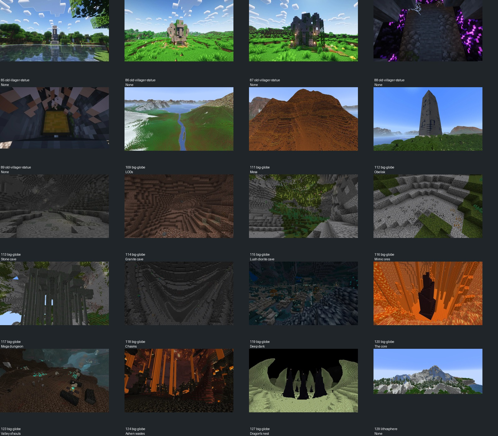
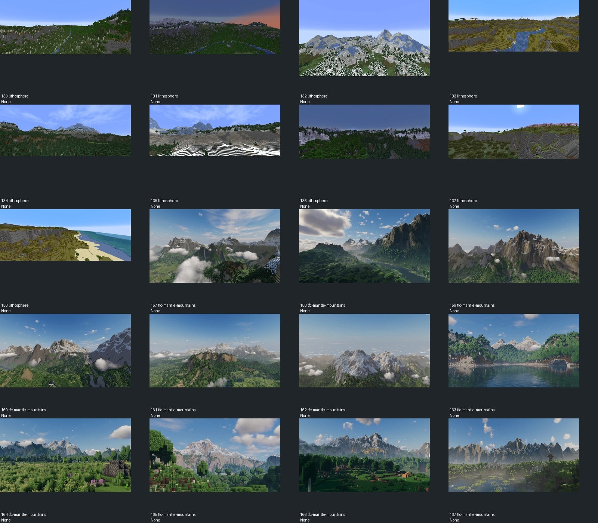
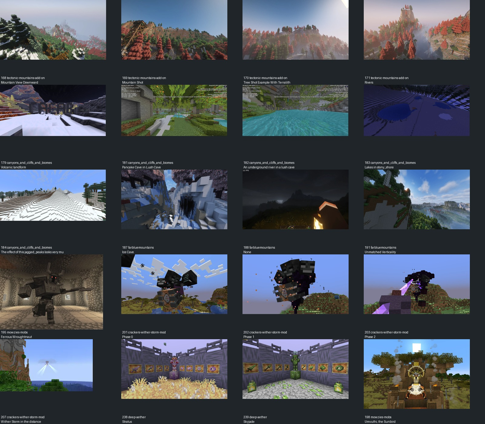

包括巨像、持械结构、石材与山谷场景，不是100个巨人或100个项目。未复用外部资产。





1 Golem Overhaul · 拱状重壳围绕窄亮核心：只学主壳厚度，不学炉腹身份。
5 Golem Overhaul · 陶质阶梯与少量彩带区分大面；石冠用少数层次，不满身描边。
13 Golemania · 紫晶肩部突出但核心保持简洁；山神肩峰保持主次而不复刻尖晶。
14 Golemania · 暗色大面中少数识别点；关节应可读，不能一片黑。
15 Golemania · 粗石纹与展开肢根；只研究石材块面，不采用该多足拓扑。
16 Golemania · 大防护侧与小头对照，武器具有独立轮廓。
17 Golemania · 中央窄核心和肩部结构分层；避免炉子模板。
18 Golemania · 肩胸宽厚，头向前压；不采用黄金色和角冠。
19 Golemania · 重甲肩、弯臂和持柄的负空间，斧手应与身体分离可读。
20 Golemania · 浅壳深缝集中在少数节点；不用全身裂纹发光。
32 Golemania · 洞内近景检查石底色与晶体材质明度。
33 Golemania · 无头饰版本主体是否成立的反例检查。
34 Golemania · 暗石主体相对明亮木屋仍有可辨轮廓。
35 Golemania · 活动状态的暗色节块间隙。
36 Golemania · 夜间小型石体的肩/肢辨认，提醒神人灰度不能糊。
38 Golemania · 碎石与主体粗细对照，不把每个表面做碎块。
39 Golemania · 宽肩武器左右非对称可读，主躯仍完整。
40 Golemania · 白天躯干和关节的明度分区。
41 Golemania · 行动中上肢从躯干伸出、没有贴在胸口。
42 Golemania · 低光下肩冠与上胸合成清楚轮廓。
43 Golemania · 厚肩和长柄相连，武器与掌有明确接触。
44 Golemania · 主体重心压低，亮缝是局部而不是外轮廓全描。
45 Golemania · 侧向动作中肩肘和目标方向可分。
64 Biome Golems · 环境材料在身体上形成大区域，非随机撒色。
66 Biome Golems · 雪夜可见轮廓，低照明不能依靠白色贴图全亮。
67 Biome Golems · 树林背景下浅石主体与暗关节对照。
68 Modular Golems · 装备色层和暗躯壳分开；不复制火焰主题。
69 Modular Golems · 几种粗重肩臂的轮廓变化，只看实体不使用标题作证据。
70 Modular Golems · 石/木巨像的长臂与身躯主次；不是声称图中角色属于暮色原作。
72 Modular Golems · 多材质同框的大面分区，不将排列中的每只重复计数。
73 Modular Golems · 普通铁傀儡相对玩家的尺度，作为不能直接放大套皮的对照。
74 Modular Golems · 金属肢体与暗环境的对照，不照搬配色。
75 Modular Golems · 深色巨像仍保留肩头分层。
76 Modular Golems · 冷色局部识别点与深色壳体，玉点控制面积。
77 Modular Golems · 铜材只占识别部件，不把山神整身变铜人。
78 Golem Magicka · 双体量角色对照，肩胸主量块与手持武器区分。
81 Sunken Warrior Statue · 远景石质人像与长柄构成清晰整体，身体支撑不依赖粒子。
82 Sunken Warrior Statue · 侧面人像双腿分开、持器与身体留空。
83 Old Illager Statue · 石像阶梯基座及深浅石材，神人脚底不加建筑基座。
84 Old Illager Statue · 远处石像简化为主轮廓。
85 Old Illager Statue · 与河岸背景同框时的尺度和朝向。
86 Old Villager Statue · 旧石结构的留空面和断续苔色，不能均匀撒斑。
87 Old Villager Statue · 背/侧大块石头与低密度植被附着。
88 Old Villager Statue · 近看石表面与晶色分区，不用紫光遮模型。
89 Old Villager Statue · 内部大色块层次，深部应读出结构而非纯黑。
109 Big Globe · 远景山体的可读阶梯和整体包围。
111 Big Globe · 横向岩层跟随山脊，转化为肩峰和胸背层理。
112 Big Globe · 石碑窄纹样与大面积完整石面，冠饰不堆满符文。
113 Big Globe · 连续石壁与地面分层，岩甲纹样应跨面组织。
114 Big Globe · 暖灰洞层和粗台阶形成体积，不做颗粒噪声。
115 Big Globe · 浅色岩面与少量暗缝，石面材质与关节区分。
116 Big Globe · 石块局部细节与完整面比例，避免矿点噪声。
117 Big Globe · 竖向巨大支撑与负空间，巨腿之间应有空隙。
118 Big Globe · 狭长裂谷和暗部明度，确定巨人峡谷净空。
119 Big Globe · 大范围暗岩与少量冷光，不靠亮点代替结构。
120 Big Globe · 孤立深色岩柱与环境对比，远档神影保持清晰。
123 Big Globe · 低饱和灰褐地面与局部浅石，材质色阶克制。
124 Big Globe · 柱状岩体纵向受力与下部基座。
127 Big Globe · 长形岩峰收分，不把山岳冠做成等高方柱。
129 Lithosphere · 近景树与远山尺度对照，避免仅靠相机放大。
130 Lithosphere · 主峰与侧峰有明确高低，不做等大碎块堆冠。
131 Lithosphere · 岩壁和植被分区清楚，石躯保持大面。
132 Lithosphere · 河谷/台地提供锚点净空参照，不实际修改地形。
133 Lithosphere · 阶梯岩脊整体走势连续，转为肩背层理。
134 Lithosphere · 近景树与远山尺度对照，避免仅靠相机放大。
135 Lithosphere · 主峰与侧峰有明确高低，不做等大碎块堆冠。
136 Lithosphere · 岩壁和植被分区清楚，石躯保持大面。
137 Lithosphere · 河谷/台地提供锚点净空参照，不实际修改地形。
138 Lithosphere · 阶梯岩脊整体走势连续，转为肩背层理。
157 TFC Mantle Mountains · 河谷/台地提供锚点净空参照，不实际修改地形。
158 TFC Mantle Mountains · 阶梯岩脊整体走势连续，转为肩背层理。
159 TFC Mantle Mountains · 近景树与远山尺度对照，避免仅靠相机放大。
160 TFC Mantle Mountains · 主峰与侧峰有明确高低，不做等大碎块堆冠。
161 TFC Mantle Mountains · 岩壁和植被分区清楚，石躯保持大面。
162 TFC Mantle Mountains · 河谷/台地提供锚点净空参照，不实际修改地形。
163 TFC Mantle Mountains · 阶梯岩脊整体走势连续，转为肩背层理。
164 TFC Mantle Mountains · 近景树与远山尺度对照，避免仅靠相机放大。
165 TFC Mantle Mountains · 主峰与侧峰有明确高低，不做等大碎块堆冠。
166 TFC Mantle Mountains · 岩壁和植被分区清楚，石躯保持大面。
167 TFC Mantle Mountains · 河谷/台地提供锚点净空参照，不实际修改地形。
168 Tectonic Mountains Add-On · 阶梯岩脊整体走势连续，转为肩背层理。
169 Tectonic Mountains Add-On · 近景树与远山尺度对照，避免仅靠相机放大。
170 Tectonic Mountains Add-On · 主峰与侧峰有明确高低，不做等大碎块堆冠。
171 Tectonic Mountains Add-On · 岩壁和植被分区清楚，石躯保持大面。
179 Canyons_and_Cliffs_and_Biomes · 火山地形的层状石色，只学岩层不引入熔岩机制。
181 Canyons_and_Cliffs_and_Biomes · 低顶洞室的主体净空提示，神影要选足够高峡谷。
182 Canyons_and_Cliffs_and_Biomes · 河道/岩壁留空对照，不能把模型锚进崖壁。
183 Canyons_and_Cliffs_and_Biomes · 夜间石岸明暗分区，作为低光剪影检查。
184 Canyons_and_Cliffs_and_Biomes · 阶梯山峰的干净折线，减少细碎小块。
187 Far Blue Mountains · 浅冰/岩壁和深裂口的结构，非复制冰材质。
188 Far Blue Mountains · 夜晚山脊仍保留轮廓，不能依靠强发光。
191 Far Blue Mountains · 高差与山脚参照，检查32米尺度的读图。
195 Mowzie's Mobs · Ferrous Wroughtnaut：宽胸、弯臂与重兵器分区、厚腿支撑；不复制盔角、斧形或原贴图。
201 Cracker's Wither Storm Mod · 巨大主体在山地前的尺度关系，不采用三头身份。
202 Cracker's Wither Storm Mod · 大主体和少量延伸部位的远景识别。
203 Cracker's Wither Storm Mod · 旁侧山坡作为体量参照，不采用光束效果。
207 Cracker's Wither Storm Mod · 远距离主体要脱离山脊背景可读；不复制发光投射。
238 Deep Aether · 石质装备与纹样的大面组织，非复制图标。
239 Deep Aether · 绿色点缀集中于少数面，玉饰服从主石灰。
198 Mowzie's Mobs · Umvuthi场景的中央视觉中心与外围尺度，不采用鸟形/王座资产。